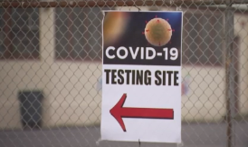
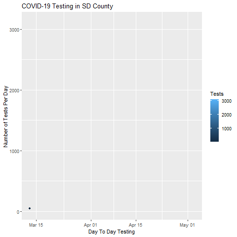

¿Qué tan confiables son las pruebas para el COVID-19?

SAN DIEGO- Los funcionarios de salud locales, estatales y federales han enfatizado la importancia de las pruebas de detección de coronavirus para determinar cuándo y cómo reabrir la economía, así como los servicios públicos como parques, bibliotecas y playas.
Pero la precisión de las pruebas, así como las nuevas pruebas que identificarían si alguien tiene inmunidad contra el virus, ahora está bajo investigación, dejando muchas preguntas sin respuesta.
Entre las preguntas están la gran cantidad de resultados negativos de las pruebas.
Los datos del condado de San Diego muestran que hasta el 4 de abril, 61,171 personas habían sido evaluadas para el COVID-19.A pesar de que los recuentos diarios de las pruebas no son muy precisos debido al hecho de que los laboratorios privados a menudo informan grandes grupos de manera continua, lo cual realizan un promedio de 1,155 pruebas por día en todo el condado.
Desde el comienzo de la pandemia, un promedio de casi el 7% de las pruebas en San Diego se han registrado como un resultado positivo, lo que significa que aproximadamente el 93% de las 61,171 pruebas realizadas en el condado de San Diego son negativas.
Los expertos locales en salud están de acuerdo en que muchas cosas pueden salir mal cuando se realiza una prueba para detectar el mortal virus y es probable que los resultados negativos de la prueba sean para aquellos con síntomas leves y para aquellos que son asintomáticos.
El Dr. William Tseng, director médico asistente de área en Kaiser Permanente en San Diego, actualmente trabaja en la unidad COVID-19 del hospital, dijo que es importante hacerse las pruebas si presenta síntomas activos.
'Cuando tiene síntomas, es cuando está eliminando el virus, por lo que si es positivo, es positivo', comentó Tseng.'Si es negativo, es realmente negativo '.
Tseng aseguró que hacerse la prueba con los síntomas es de suma importancia no solo para la persona infectada, sino también para la comunidad.
'Desde el momento de la exposición hasta el momento de la aparición de los síntomas para eliminar el virus, pueden pasar un par de días, por lo que si realiza una prueba intermedia, puede obtener un resultado falso negativo y sería horrible', dijo Tseng.'Luego está enviando a las personas a la comunidad que resultaron negativas pero están propagando activamente la enfermedad'.

De acuerdo con un nuevo estudio, realizado por la Clínica de Salud de Cleveland, los investigadores descubrieron que una de las pruebas más utilizadas, la prueba ID NOW de Abbott, tenía una confiabilidad del 85% entre las estudiadas por los investigadores de la Clínica Cleveland.
Actualmente, la prueba ID NOW de Abbott Laboratories se utiliza en tres de las redes de atención médica más grandes de San Diego.Representantes de Sharp, Scripps y Kaiser confirmaron que las pruebas Abbot ID NOW se encuentran entre las que se usan para evaluar COVID-19.
Nos comunicamos con un portavoz de UC San Diego Health pero no respondió.Sin embargo, un portavoz de Cleveland Clinic confirmó los hallazgos del estudio y afirmó que el estudio está destinado a ayudar a Cleveland Clinic para 'guiarnos en qué entorno usaríamos estas pruebas y comprender mejor las características de rendimiento'.
Por medio de un comunicado, un representante de Abbott Laboratories cuestionó los hallazgos de la clínica y calificó el estudio como 'desactualizado'.
'El estudio de la Clínica Cleveland está desactualizado porque utiliza medios de transporte viral', se lee en el comunicado de la compañía.'Cuando identificamos hace tres semanas que los medios de transporte virales podrían estar diluyendo muestras, inmediatamente nos comunicamos con nuestros clientes que deberían usar el método de hisopo directo.Cuando se utiliza el método de hisopo directo, la prueba se realiza como se esperaba y confiamos en su rendimiento '.
Y si bien la confiabilidad de las pruebas de COVID-19 sigue siendo cuestionable, los que se hacen las pruebas para ver si han desarrollado inmunidad por haber tenido la enfermedad enfrentan obstáculos aún mayores.
Sin embargo, los problemas con la precisión de las pruebas de anticuerpos han provocado que al menos un proveedor de atención médica importante decida no ofrecerlos.
'Muchos laboratorios terceros están trabajando para desarrollar nuevas pruebas de anticuerpos', dijo un portavoz de Kaiser.'Su objetivo es determinar si alguien ha sido infectado con el coronavirus, incluso cuando presenta pocos o ningún síntoma.Sin embargo, muchas de estas pruebas parecen mostrar una gran variabilidad en su precisión.
Los expertos en enfermedades infecciosas de Kaiser Permanente siguen las pautas de los expertos en salud pública.Determinarán el mejor uso de este tipo de pruebas cuando podamos estar seguros de que funcionará bien'.
Sigue todo lo que necesitas saber sobre el coronavirus en nuestra región: para ver el impacto de la evolución de la pandemia en San Diego visita aquí, y para lo último sobre el impacto en Tijuana puedes encontrarlo en este enlace.
Posted On: 2020-05-06T00:00:00
Content Date: 2020-05-06
Download Date: 2021-04-08
Document ID: L0C049O8J